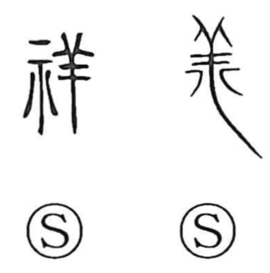

祥

Kun: saiwai, kizashi | On: sho
auspicious ・ good omen ・ good fortune ・ sign
Explanation
祥 is a phono-semantic character: the altar element 示 (here in its abbreviated form 礻) sets a ritual, divinatory scene, while 羊 acts as the phonetic that gives the on reading sho, as in 庠 and 詳. Yet 羊 also carries meaning from ancient practice, where a sheep was used in ordeals and offered as a sacred sacrifice—the same dignifying resonance seen in 義 and 善. From this background, 祥 originally named a favorable verdict in divination obtained through a sheep, and so it came to mean happiness and auspiciousness. In later usage it further broadened to the foretoken itself—the mark or sign by which one anticipates good or ill fortune.